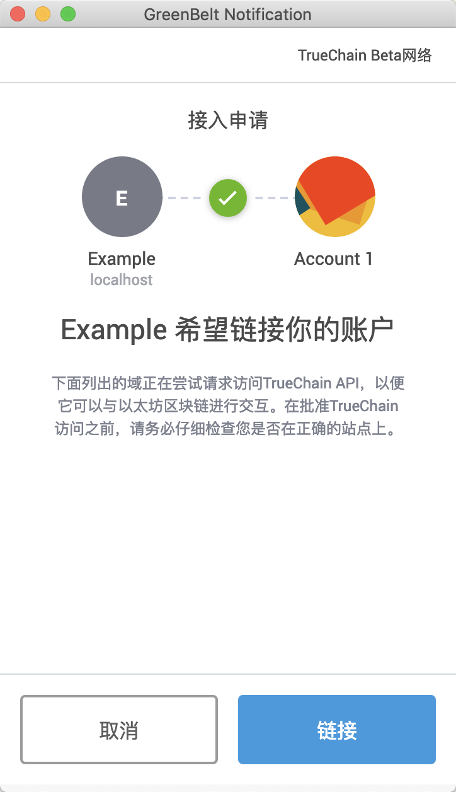
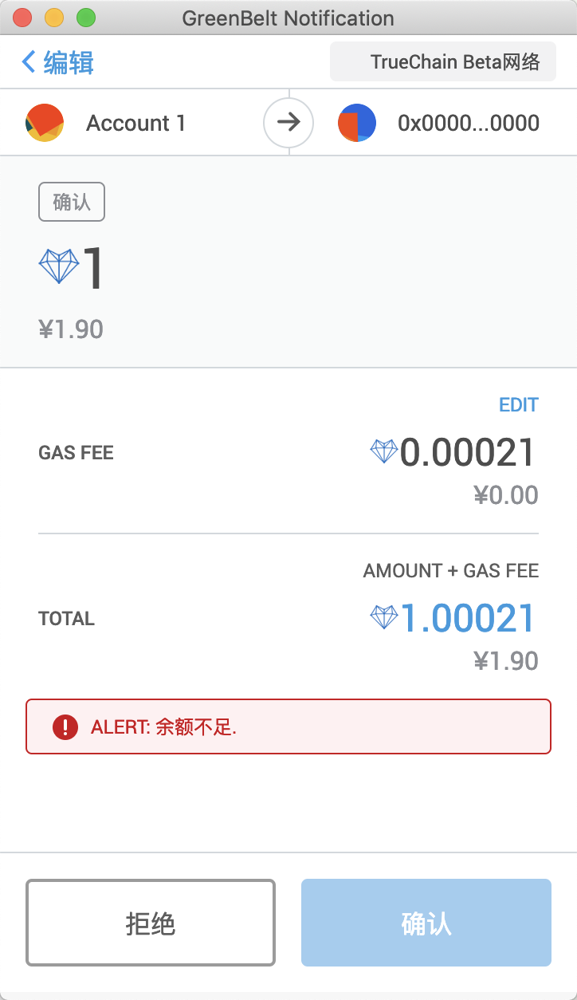

GreenBelt开发参考
安装GreenBelt
我们以Chrome浏览器为例，在Chrome网上应用商店可以找到并安装GreenBelt至浏览器中。安装完成后你应该可以在浏览器的右上角看到对应的
 图标。虽然不是必须的，但是为了之后的调试开发，请先完成插件的初始化账号创建等工作。
图标。虽然不是必须的，但是为了之后的调试开发，请先完成插件的初始化账号创建等工作。
GreenBelt做了什么？
GreenBelt将会管理用户的区块链网络账号（主要是它们的私钥）。当你需要提供一个Web端的DAPP应用的用户界面时，通过使用GreenBelt，你可以不必再让用户在Web端输入他们的私钥或者其他敏感的信息。GrennBelt会在浏览器全局注入web3t和truechain两个变量。其中truechain是一个与GreenBelt提供的替代HttpProvider的对象，而web3t则是通过其初始化的
Web3
对象。由于web3t为0.20.3版本（目前已经有1.0.0版本）的Web3对象，所以在实际开发中建议引用自己选择的版本重新初始化。
常见的一种初始化的方法：
let web3
if (web3t) {
// 使用自己指定版本的Web3进行初始化
web3 = new Web3(web3t.currentProvider)
// 或者 web3 = new Web3(truechain) 这两个是同一个对象
} else {
console.log('GreenBelt没有运行')
// 请使用备选不依靠GreenBelt的方式运行
}
获取GreenBelt访问权限
虽然GreenBelt默认是不使用隐私模式（隐私模式指未申请访问权限的网站无法使用GreenBelt提供的服务）的，但是为了确保你的应用可以正常运行，同时也是对你的用户负责，在需要使用GreenBelt提供的接口前应当先申请访问权限，申请访问权限的方法为：
truechain.enable()
第一次调用此方法后，用户会看到GreenBelt插件弹出的授权申请页面。如果用户确认后，此后调用此方法不会再次频繁弹出而是直接返回成功信息。

如果用户确认链接授权，则会返回用户当前可用的账户地址的数组，如果用户拒绝，则会抛出"User rejected provider access"的异常。完整的获取授权的参考代码如下：
truechain.enable()
.then(addresses => {
addresses.forEach(console.log)
// 获取用户可用的地址
})
.catch(err => {
console.error(err)
// 请使用备选不依靠GreenBelt的方式运行
})
你可以点击下面的按钮预览效果：
同时作为用户，你可以在GreenBelt的设置菜单中通过「清除批准数据」来重置所有网站的授权记录。
发送交易...
到目前为止，开发工作中和传统模式下不同的准备工作已经结束，理论上来说你只需要和通常的基于Web3的开发模式一样：提供用户界面、构建交易、发送交易即可。关于如何使用Web3发送交易或者调用智能合约如果你还有疑问，应该更多参考 Web3官方提供的文档 。
和直接使用Web3调用不同的一些点是：你可以不必在指定交易发起的from地址，GreenBelt会默认使用用户当前选中的地址进行交易的签名。基于同样的理由，你也可以不指定gasPrice和gas（gasLimit）。不过如果你的应用场景需要确保这些字段都符合你的预期，那么建议你仍然不要将其置空，GreenBelt对于地址和Gas费用的推理都是简单的，很有可能造成预期外的交易，DAPP开发者应当自己控制这些因素。
一个转账的示例：
// 由于web3t的版本问题，不能使用Promise形式的回调处理
// 这也是为什么推荐使用自己指定的Web3版本进行初始化
web3t.eth.sendTransaction({
to: '0x0000000000000000000000000000000000000000',
value: '1000000000000000000',
gasPrice: '10000000000'
}, result => {
alert(result.message || result)
})
你可以点击下面的按钮预览效果：
正常来说你应该会看到这样的弹出页面，GreenBelt展示了交易的细节，交给用户决定是否签名这笔交易。在本例中，由于账户余额不足因此无法确认交易，前端也会相应的收到交易签名被拒绝的异常。
注意
虽然可以通过GreenBelt来管理用户的账户，从而进行交易的签名工作，但是对于开发者来说，并不能确保用户有使用该插件。在开发时要注意考虑没有插件时的替代解决方案，或者合理的引导来让用户首先安装插件。
由于加入了GreenBelt管理交易的签名，因此会增加若干由用户选择而导致的交易失败，从交互的角度考虑，开发者应当跟踪这些错误并且针对用户的选择进行反馈调节。